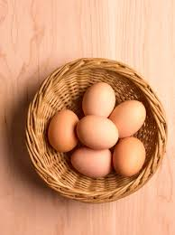
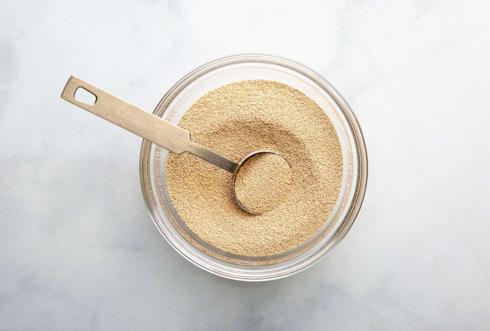

1 cup rice flour

1 cup coconut milk

1 egg per hopper

1/2 teaspoon active dry yeast

1/2 teaspoon sugar
Salt to taste
Vegetable oil for cooking
Ingredients:
1 cup rice flour
1 cup coconut milk
1 egg per hopper
1/2 teaspoon active dry yeast
1/2 teaspoon sugar
Salt to taste
Vegetable oil for cooking
Instructions:
1.Prepare Batter:
- Dissolve yeast and sugar in 1/4 cup of lukewarm water. Let it sit for
5-10 minutes until frothy.
- In a mixing bowl, combine rice flour, coconut milk, salt, and the
activated yeast mixture. Mix well to form a smooth batter. Let it rest for
at least 2 hours or overnight to ferment.
2.Cooking the Hoppers:
- Heat a small non-stick pan or a hopper pan over medium heat.
- Brush the pan lightly with oil. Pour a ladleful of batter into the pan,
swirling it around to coat the edges.
- Crack an egg into the center of the batter.
- Cover the pan and
let the hopper cook for about 3-4 minutes or until the edges are crispy
and the egg is cooked to your preference (usually with a runny yolk).
- Carefully remove the hopper from the pan and repeat the process
with the remaining batter.
3.Serve:
- Serve the egg hoppers warm with your favorite accompaniments, such
as sambal, coconut sambal, or curry.
Enjoy your homemade egg hoppers!